消息队列中间件是分布式系统中重要的组件，主要解决应用耦合(使消息的生产者和消费者解耦)，异步消息（消息的生产和消费是异步的），流量削峰等问题。实现高性能，高可用，可伸缩和最终一致性架构，是大型分布式系统不可缺少的中间件。
本场 Chat 主要内容：
- Kafka 的架构解读；
- Kafka 为什么要将 Topic 进行分区；
- Kafka 高可靠性实现基础解读；
- Kafka 复制原理和同步方式；
- Leader 选举机制，及如何确保新选举出的 Leader 是优选；
- 同步副本 ISR；
- Kafka 数据可靠性和持久性保证；
- 深入解读 HW 机制；
- Kafka 架构中 ZooKeeper 以怎样的形式存在；
- 全程解析：Producer -> kafka -> consumer。
相关内容链接：
- 《分布式中间件实践之路》
- 《Python 快速入门实战教程》
- 《分布式锁的最佳实践之：基于 Etcd 的分布式锁》
- 《基于 Redis 的分布式锁实现及踩坑案例》
- 《一个高可靠性商用 Redis 集群方案介绍》
1. Kafka 总体架构
基于 Kafka-ZooKeeper 的分布式消息队列系统总体架构如下：
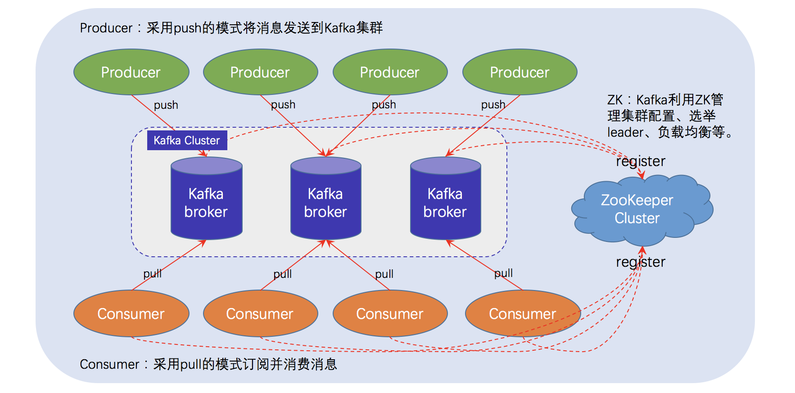
如上图所示，一个典型的 Kafka 体系架构包括若干 Producer（消息生产者），若干 broker（作为 Kafka 节点的服务器），若干 Consumer（Group），以及一个 ZooKeeper 集群。Kafka通过 ZooKeeper 管理集群配置、选举 Leader 以及在 consumer group 发生变化时进行 Rebalance（即消费者负载均衡，在下一课介绍）。Producer 使用 push（推）模式将消息发布到 broker，Consumer 使用 pull（拉）模式从 broker 订阅并消费消息。
上图仅描摹了一个总体架构，并没有对作为 Kafka 节点的 broker 进行深入刻画，事实上，它的内部细节相当复杂，如下图所示，Kafka 节点涉及 Topic、Partition 两个重要概念。
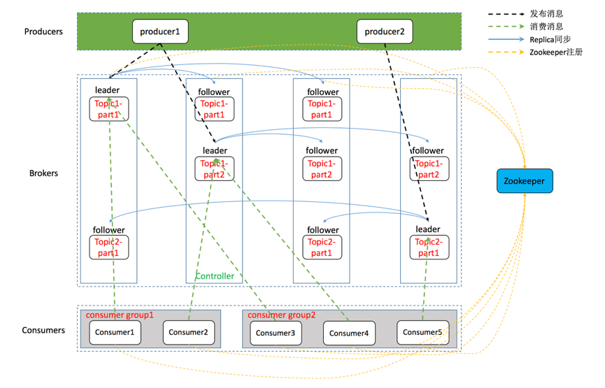
在 Kafka 架构中，有几个术语：
- Producer：生产者，即消息发送者，push 消息到 Kafka 集群中的 broker（就是 server）中；
- Broker：Kafka 集群由多个 Kafka 实例（server） 组成，每个实例构成一个 broker，说白了就是服务器；
- Topic：producer 向 kafka 集群 push 的消息会被归于某一类别，即Topic，这本质上只是一个逻辑概念，面向的对象是 producer 和 consumer，producer 只需要关注将消息 push 到哪一个 Topic 中，而 consumer 只需要关心自己订阅了哪个 Topic；
- Partition：每一个 Topic 又被分为多个 Partitions，即物理分区；出于负载均衡的考虑，同一个 Topic 的 Partitions 分别存储于 Kafka 集群的多个 broker 上；而为了提高可靠性，这些 Partitions 可以由 Kafka 机制中的 replicas 来设置备份的数量；如上面的框架图所示，每个 partition 都存在两个备份；
- Consumer：消费者，从 Kafka 集群的 broker 中 pull 消息、消费消息；
- Consumer group：high-level consumer API 中，每个 consumer 都属于一个 consumer-group，每条消息只能被 consumer-group 中的一个 Consumer 消费，但可以被多个 consumer-group 消费；
- replicas：partition 的副本，保障 partition 的高可用；
- leader：replicas 中的一个角色， producer 和 consumer 只跟 leader 交互；
- follower：replicas 中的一个角色，从 leader 中复制数据，作为副本，一旦 leader 挂掉，会从它的 followers 中选举出一个新的 leader 继续提供服务；
- controller：Kafka 集群中的其中一个服务器，用来进行 leader election 以及 各种 failover(故障转移)；
- ZooKeeper：Kafka 通过 ZooKeeper 来存储集群的 meta 信息等，文中将详述。
1.1 Topic & Partition
一个 topic 可以认为是一类消息，每个 topic 将被分成多个 partition，每个 partition 在存储层面是 append log 文件。任何发布到此 partition 的消息都会被追加到log文件的尾部，每条消息在文件中的位置称为 offset（偏移量），offset 为一个 long 型的数字，它唯一标记一条消息。 Kafka 机制中，producer push 来的消息是追加（append）到 partition 中的，这是一种顺序写磁盘的机制，效率远高于随机写内存，如下示意图：
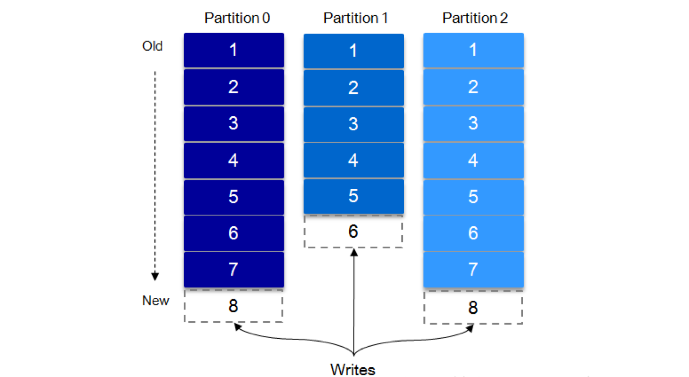
1.2 Kafka 为什么要将 Topic 进行分区？
1 | 简而言之：负载均衡 + 水平扩展。 |
前已述及，Topic 只是逻辑概念，面向的是 producer 和 consumer；而 Partition 则是物理概念。可以想象，如果 Topic 不进行分区，而将 Topic 内的消息存储于一个 broker，那么关于该 Topic 的所有读写请求都将由这一个 broker 处理，吞吐量很容易陷入瓶颈，这显然是不符合高吞吐量应用场景的。有了 Partition 概念以后，假设一个 Topic 被分为 10 个 Partitions，Kafka 会根据一定的算法将 10 个 Partition 尽可能均匀的分布到不同的 broker（服务器）上，当 producer 发布消息时，producer 客户端可以采用 random、key-hash 及 轮询 等算法选定目标 partition，若不指定，Kafka 也将根据一定算法将其置于某一分区上。Partiton 机制可以极大的提高吞吐量，并且使得系统具备良好的水平扩展能力。
在创建 topic 时可以在 $KAFKA_HOME/config/server.properties 中指定这个 partition 的数量（如下所示），当然可以在 topic 创建之后去修改 partition 的数量。
1 | # The default number of log partitions per topic. More partitions allow greater |
在发送一条消息时，可以指定这个消息的 key，producer 根据这个 key 和 partition 机制来判断这个消息发送到哪个partition。partition 机制可以通过指定 producer 的 partition.class 这一参数来指定（即支持自定义），该 class 必须实现 kafka.producer.Partitioner 接口。
有关 topic 与 partition 的更多细节，可以参考下面的“Kafka 文件存储机制”这一节。
2. Kafka 高可靠性实现基础解读
谈及可靠性，最常规、最有效的策略就是 “副本（replication）机制” ，Kafka 实现高可靠性同样采用了该策略。通过调节副本相关参数，可使 Kafka 在性能和可靠性之间取得平衡。本节先从 Kafka 文件存储机制入手，从最底层了解 Kafka 的存储细节，进而对消息的存储有个微观的认知。之后通过介绍 Kafka 的复制原理和同步方式来阐述宏观层面的概念。最后介绍 ISR，HW 和 leader 选举。
2.1 Kafka 文件存储机制
Kafka 中消息是以 topic 进行分类的，生产者通过 topic 向 Kafka broker 发送消息，消费者通过 topic 读取数据。然而 topic 在物理层面又能以 partition 为分组，一个 topic 可以分成若干个 partition。事实上，partition 并不是最终的存储粒度，partition 还可以细分为 segment，一个 partition 物理上由多个 segment 组成，那么这些 segment 又是什么呢？
为了便于说明问题，假设这里只有一个 Kafka 集群，且这个集群只有一个 Kafka broker，即只有一台物理机。在这个 Kafka broker 中配置 log.dirs=/tmp/kafka-logs，以此来设置 Kafka 消息文件存储目录；与此同时，通过命令创建一个 topic：mytopic_test，partition 的数量配置为 4（创建 topic 的命令请见上一课）。之后，可以在 /tmp/kafka-logs 目录中可以看到生成了 4 个目录：
1 | drwxr-xr-x 2 root root 4096 Apr 15 13:21 mytopic_test-0 |
在 Kafka 文件存储中，同一个 topic 下有多个不同的 partition，每个 partiton 为一个目录，partition 的名称规则为：topic 名称 + 有序序号，第一个序号从 0 开始计，最大的序号为 partition 数量减 1，partition 是实际物理上的概念，而 topic 是逻辑上的概念。
问题 1：为什么不能以 partition 作为存储单位？
上面提到 partition 还可以细分为 segment，这个 segment 又是什么？如果就以 partition 为最小存储单位，可以想象，当 Kafka producer 不断发送消息，必然会引起 partition 文件的无限扩张，将对消息文件的维护以及已消费的消息的清理带来严重的影响，因此，需以 segment 为单位将 partition 进一步细分。每个 partition（目录）相当于一个巨型文件被平均分配到多个大小相等的 segment（段）数据文件中（每个 segment 文件中消息数量不一定相等）这种特性也方便 old segment 的删除，即方便已被消费的消息的清理，提高磁盘的利用率。每个 partition 只需要支持顺序读写就行，segment 的文件生命周期由服务端配置参数（log.segment.bytes，log.roll.{ms,hours} 等若干参数）决定。
问题 2：segment 的工作原理是怎样的？
segment 文件由两部分组成，分别为 “.index” 文件和 “.log” 文件，分别表示为 segment 索引文件和数据文件。这两个文件的命令规则为：partition 全局的第一个 segment 从 0 开始，后续每个 segment 文件名为上一个 segment 文件最后一条消息的 offset 值，数值大小为 64 位，20 位数字字符长度，没有数字用 0 填充，如下：
1 | 00000000000000000000.index |
以上面的 segment 文件为例，展示出 segment：00000000000000170410 的 “.index” 文件和 “.log” 文件的对应的关系，如下图：
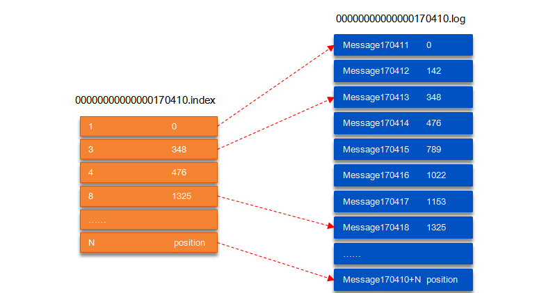
如上图，“.index” 索引文件存储大量的元数据，“.log” 数据文件存储大量的消息，索引文件中的元数据指向对应数据文件中 message 的物理偏移地址。其中以 “.index” 索引文件中的元数据 [3, 348] 为例，在 “.log” 数据文件表示第 3 个消息，即在全局 partition 中表示 170410+3=170413 个消息，该消息的物理偏移地址为 348。
问题 3：如何从 partition 中通过 offset 查找 message 呢？
以上图为例，读取 offset=170418 的消息，首先查找 segment 文件，其中 00000000000000000000.index 为最开始的文件，第二个文件为 00000000000000170410.index（起始偏移为 170410+1=170411），而第三个文件为 00000000000000239430.index（起始偏移为 239430+1=239431），所以这个 offset=170418 就落到了第二个文件之中。其它后续文件可以依次类推，以其偏移量命名并排列这些文件，然后根据二分查找法就可以快速定位到具体文件位置。其次根据 00000000000000170410.index 文件中的 [8,1325] 定位到 00000000000000170410.log 文件中的 1325 的位置进行读取。
要是读取 offset=170418 的消息，从 00000000000000170410.log 文件中的 1325 的位置进行读取，那么，如何确定何时读完本条消息呢？（否则就读到下一条消息的内容了）
这个问题由消息的物理结构解决，消息都具有固定的物理结构，包括：offset（8 Bytes）、消息体的大小（4 Bytes）、crc32（4 Bytes）、magic（1 Byte）、attributes（1 Byte）、key length（4 Bytes）、key（K Bytes）、payload（N Bytes）等等字段，可以确定一条消息的大小，即读取到哪里截止。
2.2 复制原理和同步方式
Kafka 中 topic 的每个 partition 有一个预写式的日志文件，虽然 partition 可以继续细分为若干个 segment 文件，但是对于上层应用来说，仍然可以将 partition 看成最小的存储单元（一个有多个 segment 文件拼接的 “巨型” 文件），每个 partition 都由一些列有序的、不可变的消息组成，这些消息被连续的追加到 partition 中。
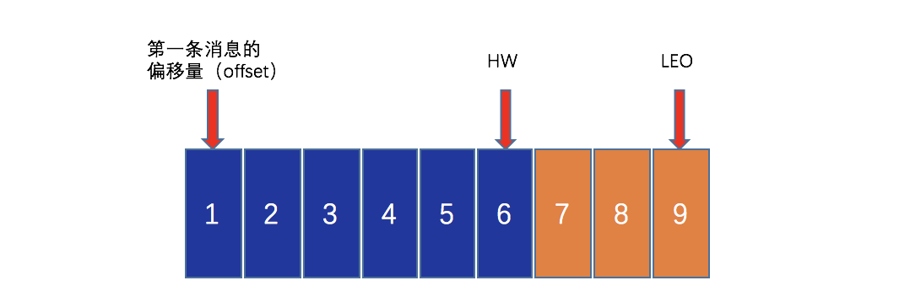
上图中有两个新名词：HW 和 LEO。这里先介绍下 LEO，LogEndOffset 的缩写，表示每个 partition 的 log 最后一条 Message 的位置。HW 是 HighWatermark 的缩写，是指 consumer 能够看到的此 partition 的位置，这个涉及到多副本的概念，这里先提及一下，下文再详述。
言归正传，为了提高消息的可靠性，Kafka 每个 topic 的 partition 有 N 个副本（replicas），其中 N（大于等于 1）是 topic 的复制因子（replica fator）的个数。Kafka 通过多副本机制实现故障自动转移，当 Kafka 集群中出现 broker 失效时，副本机制可保证服务可用。对于任何一个 partition，它的 N 个 replicas 中，其中一个 replica 为 leader，其他都为 follower，leader 负责处理 partition 的所有读写请求，follower 则负责被动地去复制 leader 上的数据。如下图所示，Kafka 集群中有 4 个 broker，某 topic 有 3 个 partition，且复制因子即副本个数也为 3：
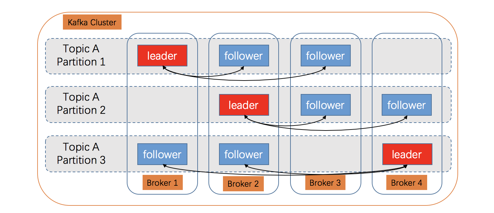
如果 leader 所在的 broker 发生故障或宕机，对应 partition 将因无 leader 而不能处理客户端请求，这时副本的作用就体现出来了：一个新 leader 将从 follower 中被选举出来并继续处理客户端的请求。
如何确保新选举出的 leader 是优选呢？
一个 partition 有多个副本（replicas），为了提高可靠性，这些副本分散在不同的 broker 上，由于带宽、读写性能、网络延迟等因素，同一时刻，这些副本的状态通常是不一致的：即 followers 与 leader 的状态不一致。那么，如何保证新选举出的 leader 是优选呢？ Kafka 机制中，leader 将负责维护和跟踪一个 ISR（In-Sync Replicas）列表，即同步副本队列，这个列表里面的副本与 leader 保持同步，状态一致。如果新的 leader 从 ISR 列表中的副本中选出，那么就可以保证新 leader 为优选。当然，这不是唯一的策略，下文将继续解读。
2.3 同步副本 ISR
上一节中讲到了同步副本队列 ISR（In-Sync Replicas）。虽然副本极大的增强了可用性，但是副本数量对 Kafka 的吞吐率有一定影响。默认情况下 Kafka 的 replica 数量为 1，即每个 partition 都只有唯一的 leader，无 follower，没有容灾能力。为了确保消息的可靠性，生产环境中，通常将其值（由 broker 的参数 offsets.topic.replication.factor 指定）大小设置为大于 1，比如 3。 所有的副本（replicas）统称为 Assigned Replicas，即 AR。ISR 是 AR 中的一个子集，由 leader 维护 ISR 列表，follower 从 leader 同步数据有一些延迟（由参数 replica.lag.time.max.ms 设置超时阈值），超过阈值的 follower 将被剔除出 ISR， 存入 OSR（Outof-Sync Replicas）列表，新加入的 follower 也会先存放在 OSR 中。AR=ISR+OSR。
1 | 注：ISR中包括：leader + 与leader保持同步的followers。 |
上面一节还涉及到一个概念，即 HW。HW 俗称高水位，HighWatermark 的缩写，取一个 partition 对应的 ISR 中最小的 LEO 作为 HW，consumer 最多只能消费到 HW 所在的位置。另外每个 replica 都有 HW，leader 和 follower 各自负责更新自己的 HW 的状态。对于 leader 新写入的消息，consumer 不能立刻消费，leader 会等待该消息被所有 ISR 中的 replicas 同步后更新 HW，此时消息才能被 consumer 消费。这样就保证了如果 leader 所在的 broker 失效，该消息仍然可以从新选举的 leader 中获取。对于来自内部 broker 的读取请求，没有 HW 的限制。
下图详细的说明了当 producer 生产消息至 broker 后，ISR 以及 HW 和 LEO 的流转过程：
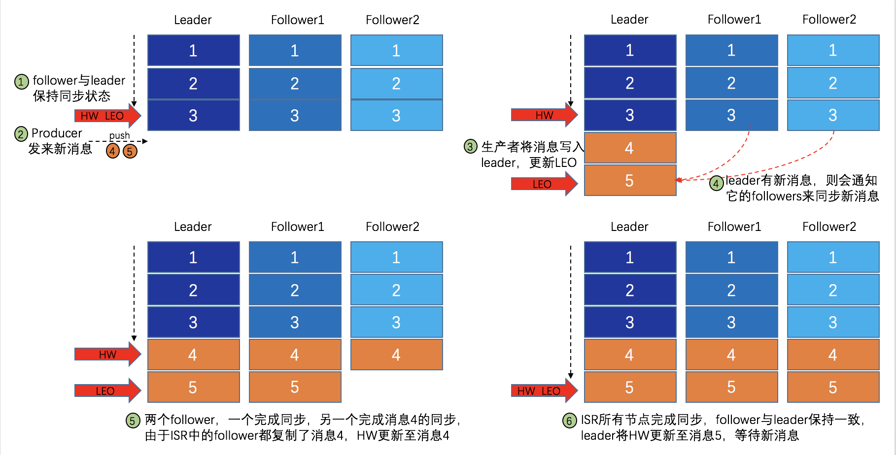
由此可见，Kafka 的复制机制既不是完全的同步复制，也不是单纯的异步复制。事实上，同步复制要求所有能工作的 follower 都复制完，这条消息才会被 commit，这种复制方式受限于复制最慢的 follower，会极大的影响吞吐率。而异步复制方式下，follower 异步的从 leader 复制数据，数据只要被 leader 写入 log 就被认为已经 commit，这种情况下如果 follower 都还没有复制完，落后于 leader 时，突然 leader 宕机，则会丢失数据，降低可靠性。而 Kafka 使用 ISR 的策略则在可靠性和吞吐率方面取得了较好的平衡。
Kafka 的 ISR 的管理最终都会反馈到 ZooKeeper 节点上，具体位置为：
1 | /brokers/topics/[topic]/partitions/[partition]/state |
目前，有两个地方会对这个 ZooKeeper 的节点进行维护。
- Controller 来维护：Kafka 集群中的其中一个 Broker 会被选举为 Controller，主要负责 Partition 管理和副本状态管理，也会执行类似于重分配 partition 之类的管理任务。在符合某些特定条件下，Controller 下的 LeaderSelector 会选举新的 leader，ISR 和新的
leader_epoch及controller_epoch写入 ZooKeeper 的相关节点中。同时发起 LeaderAndIsrRequest 通知所有的 replicas。 - leader 来维护：leader 有单独的线程定期检测 ISR 中 follower 是否脱离 ISR，如果发现 ISR 变化，则会将新的 ISR 的信息返回到 ZooKeeper 的相关节点中。
2.4 数据可靠性和持久性保证
当 producer 向 leader 发送数据时，可以通过 request.required.acks 参数来设置数据可靠性的级别：
1. request.required.acks = 1
这是默认情况，即：producer 发送数据到 leader，leader 写本地日志成功，返回客户端成功；此时 ISR 中的其它副本还没有来得及拉取该消息，如果此时 leader 宕机了，那么此次发送的消息就会丢失。
2. request.required.acks = 0
producer 不停向leader发送数据，而不需要 leader 反馈成功消息，这种情况下数据传输效率最高，但是数据可靠性确是最低的。可能在发送过程中丢失数据，可能在 leader 宕机时丢失数据。
3. request.required.acks = -1（all）
producer 发送数据给 leader，leader 收到数据后要等到 ISR 列表中的所有副本都同步数据完成后（强一致性），才向生产者返回成功消息，如果一直收不到成功消息，则认为发送数据失败会自动重发数据。这是可靠性最高的方案，当然，性能也会受到一定影响。
*注意：参数 min.insync.replicas *
如果要提高数据的可靠性，在设置 request.required.acks=-1 的同时，还需参数 min.insync.replicas 配合，如此才能发挥最大的功效。min.insync.replicas 这个参数用于设定 ISR 中的最小副本数，默认值为1，当且仅当 request.required.acks 参数设置为-1时，此参数才生效。当 ISR 中的副本数少于 min.insync.replicas 配置的数量时，客户端会返回异常：org.apache.kafka.common.errors.NotEnoughReplicasExceptoin: Messages are rejected since there are fewer in-sync replicas than required。不难理解，如果 min.insync.replicas 设置为 2，当 ISR 中实际副本数为 1 时（只有leader），将无法保证可靠性，此时拒绝客户端的写请求以防止消息丢失。
2.5 深入解读 HW 机制
考虑这样一种场景：acks=-1，部分 ISR 副本完成同步，此时leader挂掉，如下图所示：follower1 同步了消息 4、5，follower2 同步了消息 4，与此同时 follower2 被选举为 leader，那么此时 follower1 中的多出的消息 5 该做如何处理呢？
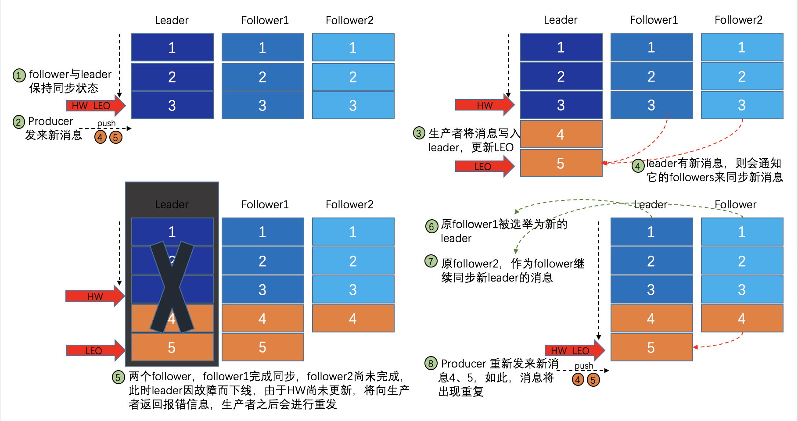
这里就需要 HW 的协同配合了。如前所述，一个 partition 中的 ISR 列表中，leader 的 HW 是所有 ISR 列表里副本中最小的那个的 LEO。类似于木桶原理，水位取决于最低那块短板。
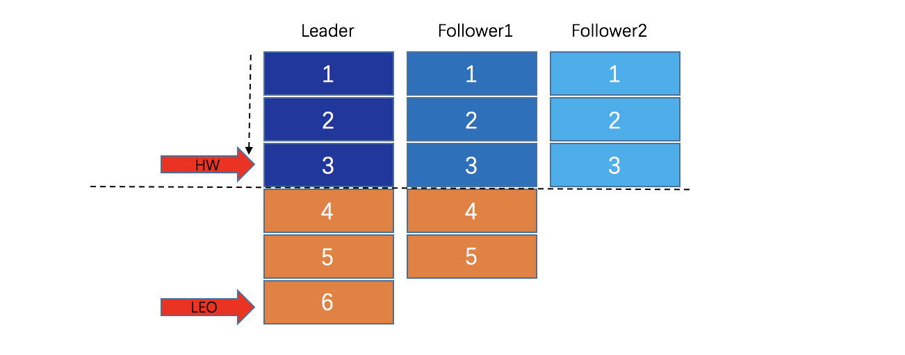
如上图，某个 topic 的某 partition 有三个副本，分别为 A、B、C。A 作为 leader 肯定是 LEO 最高，B 紧随其后，C 机器由于配置比较低，网络比较差，故而同步最慢。这个时候 A 机器宕机，这时候如果 B 成为 leader，假如没有 HW，在 A 重新恢复之后会做同步（makeFollower) 操作，在宕机时 log 文件之后直接做追加操作，而假如 B 的 LEO 已经达到了 A 的 LEO，会产生数据不一致的情况，所以使用 HW 来避免这种情况。 A 在做同步操作的时候，先将 log 文件截断到之前自己的 HW 的位置，即 3，之后再从 B 中拉取消息进行同步。
如果失败的 follower 恢复过来，它首先将自己的 log 文件截断到上次 checkpointed 时刻的 HW 的位置，之后再从 leader 中同步消息。leader 挂掉会重新选举，新的 leader 会发送 “指令” 让其余的 follower 截断至自身的 HW 的位置然后再拉取新的消息。
当 ISR 中的个副本的 LEO 不一致时，如果此时 leader 挂掉，选举新的 leader 时并不是按照 LEO 的高低进行选举，而是按照 ISR 中的顺序选举。
2.6 Leader 选举
为了保证可靠性，对于任意一条消息，只有它被 ISR 中的所有 follower 都从 leader 复制过去才会被认为已提交，并返回信息给 producer。如此，可以避免因部分数据被写进 leader，而尚未被任何 follower 复制就宕机的情况下而造成数据丢失。对于 producer 而言，它可以选择是否等待消息 commit，这可以通过参数 request.required.acks 来设置。这种机制可以确保：只要 ISR 中有一个或者以上的 follower，一条被 commit 的消息就不会丢失。
问题 1：如何在保证可靠性的前提下避免吞吐量下降？
有一个很重要的问题是当 leader 宕机了，怎样在 follower 中选举出新的 leader，因为 follower 可能落后很多或者直接 crash 了，所以必须确保选择 “最新” 的 follower 作为新的 leader。一个基本的原则就是，如果 leader 挂掉，新的 leader 必须拥有原来的 leader 已经 commit 的所有消息，这不就是 ISR 中副本的特征吗？
但是，存在一个问题，ISR 列表维持多大的规模合适呢？换言之，leader 在一个消息被 commit 前需要等待多少个 follower 确认呢？等待 follower 的数量越多，与 leader 保持同步的 follower 就越多，可靠性就越高，但这也会造成吞吐率的下降。
少数服从多数的选举原则
一种常用的选举 leader 的策略是 “少数服从多数” ，不过，Kafka 并不是采用这种方式。这种模式下，如果有 2f+1 个副本，那么在 commit 之前必须保证有 f+1 个 replica 复制完消息，同时为了保证能正确选举出新的 leader，失败的副本数不能超过 f 个。这种方式有个很大的优势，系统的延迟取决于最快的几台机器，也就是说比如副本数为 3，那么延迟就取决于最快的那个 follower 而不是最慢的那个。
“少数服从多数” 的策略也有一些劣势，为了保证 leader 选举的正常进行，它所能容忍的失败的 follower 数比较少，如果要容忍 1 个 follower 挂掉，那么至少要 3 个以上的副本，如果要容忍 2 个 follower 挂掉，必须要有 5 个以上的副本。也就是说，在生产环境下为了保证较高的容错率，必须要有大量的副本，而大量的副本又会在大数据量下导致性能的急剧下降。这种算法更多用在 ZooKeeper 这种共享集群配置的系统中，而很少在需要大量数据的系统中使用。
Kafka 选举 leader 的策略是怎样的？
实际上，leader 选举的算法非常多，比如 ZooKeeper 的 Zab、Raft 以及 Viewstamped Replication。而 Kafka 所使用的 leader 选举算法更像是微软的 PacificA 算法。
Kafka 在 ZooKeeper 中为每一个 partition 动态的维护了一个 ISR，这个 ISR 里的所有 replica 都与 leader 保持同步，只有 ISR 里的成员才能有被选为 leader 的可能（通过参数配置：unclean.leader.election.enable=false）。在这种模式下，对于 f+1 个副本，一个 Kafka topic 能在保证不丢失已经 commit 消息的前提下容忍 f 个副本的失败，在大多数使用场景下，这种模式是十分有利的。事实上，对于任意一条消息，只有它被 ISR 中的所有 follower 都从 leader 复制过去才会被认为已提交，并返回信息给 producer，从而保证可靠性。但与 “少数服从多数” 策略不同的是，Kafka ISR 列表中副本的数量不需要超过副本总数的一半，即不需要满足 “多数派” 原则，通常，ISR 列表副本数大于等于 2 即可，如此，便在可靠性和吞吐量方面取得平衡。
极端情况下的 leader 选举策略
前已述及，当 ISR 中至少有一个 follower 时（ISR 包括 leader），Kafka 可以确保已经 commit 的消息不丢失，但如果某一个 partition 的所有 replica 都挂了，自然就无法保证数据不丢失了。这种情况下如何进行 leader 选举呢？通常有两种方案：
- 等待 ISR 中任意一个 replica 恢复过来，并且选它作为 leader；
- 选择第一个恢复过来的 replica（并不一定是在 ISR 中）作为leader。（默认）
如何选择呢？这就需要在可用性和一致性当中作出抉择。如果一定要等待 ISR 中的 replica 恢复过来，不可用的时间就可能会相对较长。而且如果 ISR 中所有的 replica 都无法恢复了，或者数据丢失了，这个 partition 将永远不可用。
选择第一个恢复过来的 replica 作为 leader，如果这个 replica 不是 ISR 中的 replica，那么，它可能并不具备所有已经 commit 的消息，从而造成消息丢失。默认情况下，Kafka 采用第二种策略，即 unclean.leader.election.enable=true，也可以将此参数设置为 false 来启用第一种策略。
unclean.leader.election.enable 这个参数对于 leader 的选举、系统的可用性以及数据的可靠性都有至关重要的影响。生产环境中应慎重权衡。
3. Kafka 架构中 ZooKeeper 以怎样的形式存在？
ZooKeeper 是一个分布式的、开放源码的分布式应用程序协调服务，是 Google 的 Chubby 一个开源的实现。分布式应用程序可以基于它实现统一命名服务、状态同步服务、集群管理、分布式应用配置项的管理等工作。在基于 Kafka 的分布式消息队列中，ZooKeeper 的作用有：broker 注册、topic 注册、producer 和 consumer 负载均衡、维护 partition 与 consumer 的关系、记录消息消费的进度以及 consumer 注册等。
3.1 broker 在 ZooKeeper 中的注册
- 为了记录 broker 的注册信息，在 ZooKeeper 上，专门创建了属于 Kafka 的一个节点，其路径为 /brokers；
- Kafka 的每个 broker 启动时，都会到 ZooKeeper 中进行注册，告诉 ZooKeeper 其 broker.id，在整个集群中，broker.id 应该全局唯一，并在 ZooKeeper 上创建其属于自己的节点，其节点路径为
/brokers/ids/{broker.id}； - 创建完节点后，Kafka 会将该 broker 的 broker.name 及端口号记录到该节点；
- 另外，该 broker 节点属性为临时节点，当 broker 会话失效时，ZooKeeper 会删除该节点，这样，我们就可以很方便的监控到broker 节点的变化，及时调整负载均衡等。
3.2 Topic 在 ZooKeeper 中的注册
在 Kafka 中，所有 topic 与 broker 的对应关系都由 ZooKeeper 进行维护，在 ZooKeeper 中，建立专门的节点来记录这些信息，其节点路径为 /brokers/topics/{topic_name}。 前面说过，为了保障数据的可靠性，每个 Topic 的 Partitions 实际上是存在备份的，并且备份的数量由 Kafka 机制中的 replicas 来控制。那么问题来了：如下图所示，假设某个 TopicA 被分为 2 个 Partitions，并且存在两个备份，由于这 2 个 Partitions（1-2）被分布在不同的 broker 上，同一个 partiton 与其备份不能（也不应该）存储于同一个 broker 上。以 Partition1 为例，假设它被存储于 broker2，其对应的备份分别存储于 broker1 和 broker4，有了备份，可靠性得到保障，但数据一致性却是个问题。
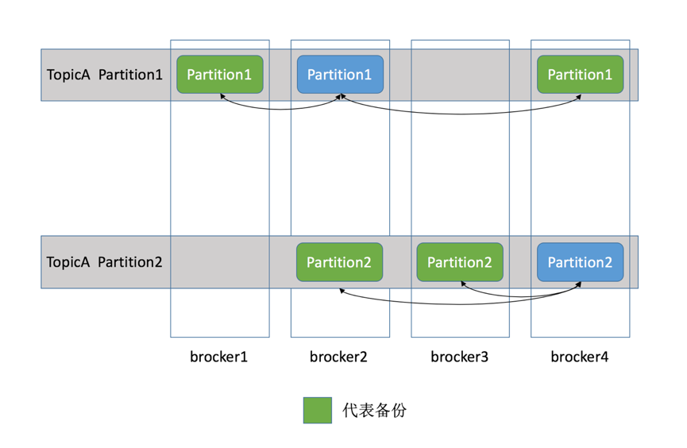
为了保障数据的一致性，ZooKeeper 机制得以引入。基于 ZooKeeper，Kafka 为每一个 partition 找一个节点作为 leader，其余备份作为 follower；接续上图的例子，就 TopicA 的 partition1 而言，如果位于 broker2（Kafka 节点）上的 partition1 为 leader，那么位于 broker1 和 broker4 上面的 partition1 就充当 follower，则有下图：
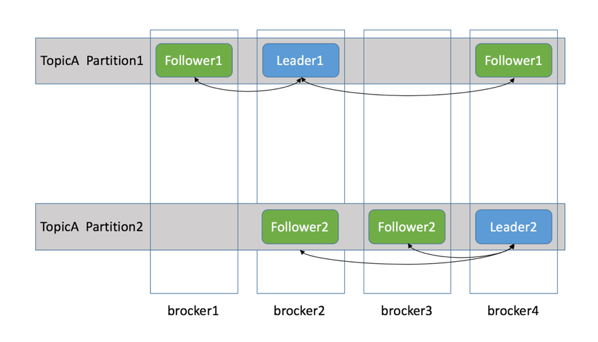
基于上图的架构，当 producer push 的消息写入 partition（分区) 时，作为 leader 的 broker（Kafka 节点） 会将消息写入自己的分区，同时还会将此消息复制到各个 follower，实现同步。如果，某个follower 挂掉，leader 会再找一个替代并同步消息；如果 leader 挂了，follower 们会选举出一个新的 leader 替代，继续业务，这些都是由 ZooKeeper 完成的。
3.3 consumer 在 ZooKeeper 中的注册
注册新的消费者分组
当新的消费者组注册到 ZooKeeper 中时，ZooKeeper 会创建专用的节点来保存相关信息，其节点路径为 ls/consumers/{group_id}，其节点下有三个子节点，分别为 [ids, owners, offsets]。
- ids 节点：记录该消费组中当前正在消费的消费者；
- owners 节点：记录该消费组消费的 topic 信息；
- offsets 节点：记录每个 topic 的每个分区的 offset。
注册新的消费者
当新的消费者注册到 Kafka 中时，会在 /consumers/{group_id}/ids 节点下创建临时子节点，并记录相关信息。
监听消费者分组中消费者的变化
每个消费者都要关注其所属消费者组中消费者数目的变化，即监听 /consumers/{group_id}/ids 下子节点的变化。一旦发现消费者新增或减少，就会触发消费者的负载均衡。
3.4 Producers 负载均衡
对于同一个 topic 的不同 partition，Kafka会尽力将这些 partition 分布到不同的 broker 服务器上，这种均衡策略实际上是基于 ZooKeeper 实现的。在一个 broker 启动时，会首先完成 broker 的注册过程，并注册一些诸如 “有哪些可订阅的 topic” 之类的元数据信息。producers 启动后也要到 ZooKeeper 下注册，创建一个临时节点来监听 broker 服务器列表的变化。由于在 ZooKeeper 下 broker 创建的也是临时节点，当 brokers 发生变化时，producers 可以得到相关的通知，从改变自己的 broker list。其它的诸如 topic 的变化以及broker 和 topic 的关系变化，也是通过 ZooKeeper 的这种 Watcher 监听实现的。
在生产中，必须指定 topic；但是对于 partition，有两种指定方式：
- 明确指定 partition(0-N)，则数据被发送到指定 partition；
- 设置为
RD_KAFKA_PARTITION_UA，则 Kafka 会回调 partitioner 进行均衡选取，partitioner 方法需要自己实现。可以轮询或者传入 key 进行 hash。未实现则采用默认的随机方法rd_kafka_msg_partitioner_random随机选择。
3.5 Consumer 负载均衡
Kafka 保证同一 consumer group 中只有一个 consumer 可消费某条消息，实际上，Kafka 保证的是稳定状态下每一个 consumer 实例只会消费某一个或多个特定的数据，而某个 partition 的数据只会被某一个特定的 consumer 实例所消费。这样设计的劣势是无法让同一个 consumer group 里的 consumer 均匀消费数据，优势是每个 consumer 不用都跟大量的 broker 通信，减少通信开销，同时也降低了分配难度，实现也更简单。另外，因为同一个 partition 里的数据是有序的，这种设计可以保证每个 partition 里的数据也是有序被消费。
consumer 数量不等于 partition 数量
如果某 consumer group 中 consumer 数量少于 partition 数量，则至少有一个 consumer 会消费多个 partition 的数据；如果 consumer 的数量与 partition 数量相同，则正好一个 consumer 消费一个 partition 的数据，而如果 consumer 的数量多于 partition 的数量时，会有部分 consumer 无法消费该 topic 下任何一条消息。
借助 ZooKeeper 实现负载均衡
关于负载均衡，对于某些低级别的 API，consumer 消费时必须指定 topic 和 partition，这显然不是一种友好的均衡策略。基于高级别的 API，consumer 消费时只需制定 topic，借助 ZooKeeper 可以根据 partition 的数量和 consumer 的数量做到均衡的动态配置。
consumers 在启动时会到 ZooKeeper 下以自己的 conusmer-id 创建临时节点 /consumer/[group-id]/ids/[conusmer-id]，并对 /consumer/[group-id]/ids 注册监听事件，当消费者发生变化时，同一 group 的其余消费者会得到通知。当然，消费者还要监听 broker 列表的变化。librdkafka 通常会将 partition 进行排序后，根据消费者列表，进行轮流的分配。
3.6 记录消费进度 Offset
在 consumer 对指定消息 partition 的消息进行消费的过程中，需要定时地将 partition 消息的消费进度 Offset 记录到 ZooKeeper上，以便在该 consumer 进行重启或者其它 consumer 重新接管该消息分区的消息消费权后，能够从之前的进度开始继续进行消息消费。Offset 在 ZooKeeper 中由一个专门节点进行记录，其节点路径为：
1 | #节点内容就是Offset的值。 |
PS：Kafka 已推荐将 consumer 的 Offset 信息保存在 Kafka 内部的 topic 中，即：
1 | __consumer_offsets(/brokers/topics/__consumer_offsets) |
并且默认提供了 kafka_consumer_groups.sh 脚本供用户查看consumer 信息（命令：sh kafka-consumer-groups.sh –bootstrap-server * –describe –group *）。在当前版本中，offset 存储方式要么存储在本地文件中，要么存储在 broker 端，具体的存储方式取决 offset.store.method 的配置，默认是存储在 broker 端。
3.7 记录 Partition 与 Consumer 的关系
consumer group 下有多个 consumer（消费者），对于每个消费者组（consumer group），Kafka都会为其分配一个全局唯一的 group ID，group 内部的所有消费者共享该 ID。订阅的 topic 下的每个分区只能分配给某个 group 下的一个consumer（当然该分区还可以被分配给其它 group）。同时，Kafka 为每个消费者分配一个 consumer ID，通常采用 hostname:UUID 形式表示。
在Kafka中，规定了每个 partition 只能被同组的一个消费者进行消费，因此，需要在 ZooKeeper 上记录下 partition 与 consumer 之间的关系，每个 consumer 一旦确定了对一个 partition 的消费权力，需要将其 consumer ID 写入到 ZooKeeper 对应消息分区的临时节点上，例如：
1 | /consumers/[group_id]/owners/[topic]/[broker_id-partition_id] |
其中，[broker_id-partition_id] 就是一个消息分区的标识，节点内容就是该消息分区 消费者的 consumer ID。
4. 全程解析（Producer-kafka-consumer）
4.1 producer 发布消息
producer 采用 push 模式将消息发布到 broker，每条消息都被 append 到 patition 中，属于顺序写磁盘（顺序写磁盘效率比随机写内存要高，保障 kafka 吞吐率）。producer 发送消息到 broker 时，会根据分区算法选择将其存储到哪一个 partition。
其路由机制为：
- 指定了 patition，则直接使用；
- 未指定 patition 但指定 key，通过对 key 进行 hash 选出一个 patition；
- patition 和 key 都未指定，使用轮询选出一个 patition。
写入流程：
- producer 先从 ZooKeeper 的 “/brokers/…/state” 节点找到该 partition 的leader；
- producer 将消息发送给该 leader；
- leader 将消息写入本地 log；
- followers 从 leader pull 消息，写入本地 log 后 leader 发送 ACK；
- leader 收到所有 ISR 中的 replica 的 ACK 后，增加 HW（high watermark，最后 commit 的 offset） 并向 producer 发送 ACK；
4.2 Broker 存储消息
物理上把 topic 分成一个或多个 patition，每个 patition 物理上对应一个文件夹（该文件夹存储该 patition 的所有消息和索引文件）
4.3 Consumer 消费消息
high-level consumer API 提供了 consumer group 的语义，一个消息只能被 group 内的一个 consumer 所消费，且 consumer 消费消息时不关注 offset，最后一个 offset 由 ZooKeeper 保存（下次消费时，该group 中的consumer将从offset记录的位置开始消费）。
注意：
- 如果消费线程大于 patition 数量，则有些线程将收不到消息；
- 如果 patition 数量大于消费线程数，则有些线程多收到多个 patition 的消息；
- 如果一个线程消费多个 patition，则无法保证你收到的消息的顺序，而一个 patition 内的消息是有序的。
consumer 采用 pull 模式从 broker 中读取数据。
push 模式很难适应消费速率不同的消费者，因为消息发送速率是由 broker 决定的。它的目标是尽可能以最快速度传递消息，但是这样很容易造成 consumer 来不及处理消息，典型的表现就是拒绝服务以及网络拥塞。而 pull 模式则可以根据 consumer 的消费能力以适当的速率消费消息。
对于 Kafka 而言，pull 模式更合适，它可简化 broker 的设计，consumer 可自主控制消费消息的速率，同时 consumer 可以自己控制消费方式——即可批量消费也可逐条消费，同时还能选择不同的提交方式从而实现不同的传输语义。